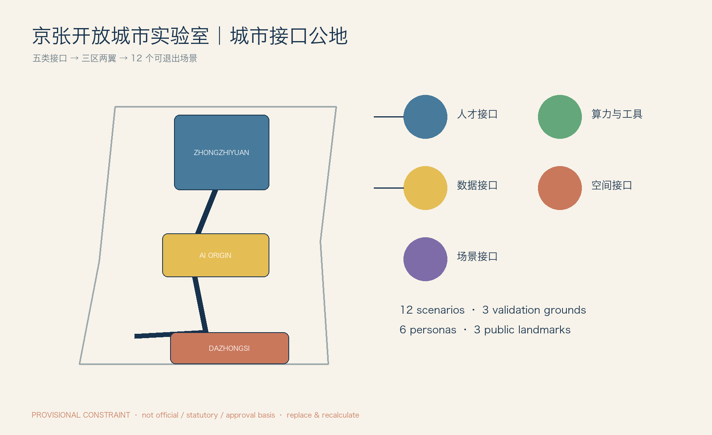

城市接口公地 / Urban Interface Commons：以可替换、可审计、可退出的公共接口，让 AI 在统一规则下接入真实城市。
临时几何约束：图中范围不是官方红线、法定控制或审批依据；正式 SITE_BOUNDARY 与 KEY_AREA 到位后，以 EPSG:4548 重算。

一条铁路遗产慢行主脊连接三区两翼；接口点均有人工负责人、断电或停止条件。
区域协同、遗产主脊、可预约接口节点；不预设外部机构已参与。
众智园验证、AI 原点社区共创、大钟寺专业服务交流。
概念功能覆盖，不替代法定用地分类或控规。
无障碍优先；低速设备只在围合/预约路线，失效时恢复人工管理。
遮荫、停留、生态观察和安静反馈；默认关闭身份识别。
不提出建筑规模或高度；仅使用可拆接口箱、接管台、停靠位和临时围合。
轻介入、网络化、制度化三阶段；续期必须重新申请。
12 张场景卡分别写明 AI 限制、非 AI 回退、人工复核、停止和恢复。
五类接口均对应服务对象、提供主体、准入、期限、人工责任、暂停、退出和验收。
以 package 内 persisted self_check 记录确定性、空间、视觉和专业证据 gate；正式提交前重新执行。
临时范围不代表官方边界，正式资料到位后替换并重算。
0–12 月：可逆组件、人工反馈与低风险小试；12–24 月：统一接入合同、日志和验证场；24 月后：开放标准与年度透明报告。任何续期都重新申请；失败由申请方恢复场地、人工服务和数据处置。
离线页面：无 CDN、远程脚本、追踪或自动播放。来源、权利和限制见 package 内 sources.json 与 report/copyright_statement.md。